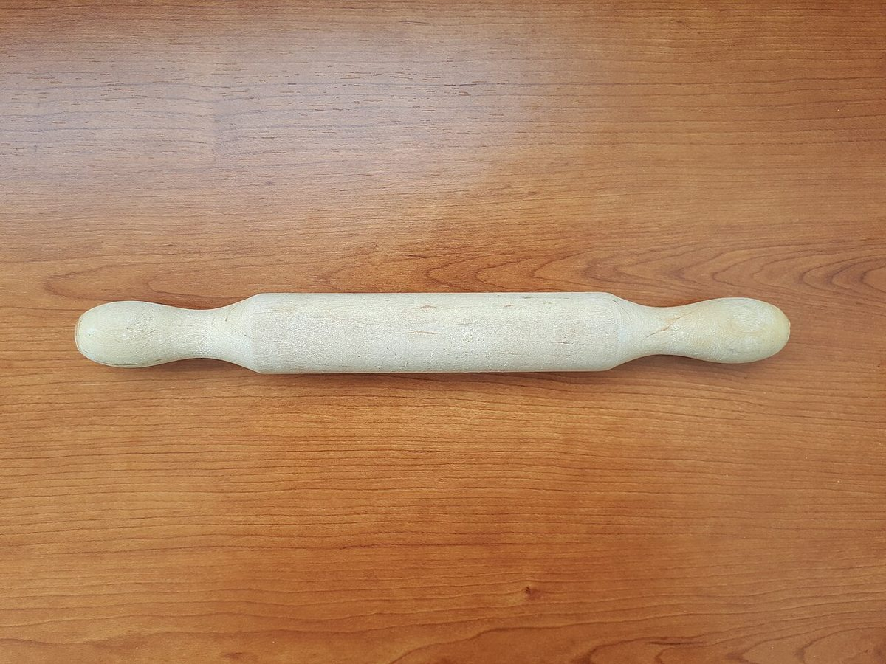
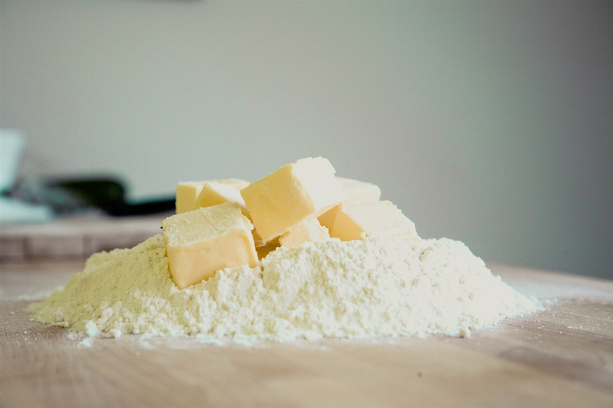
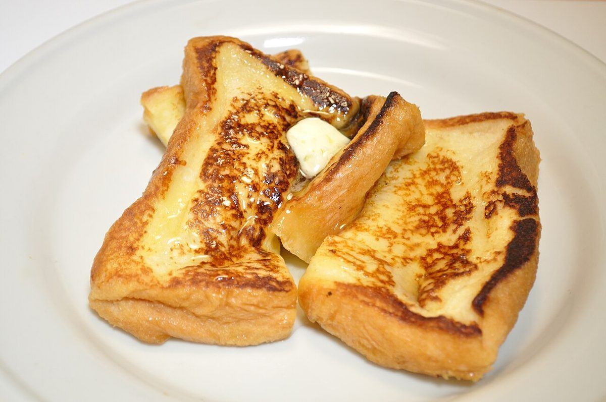

このサイトについて
部位図の読みかた
機械の取扱説明書には、本体の絵に番号がふってあり、その番号の説明が並んでいます。このサイトのトップは、その形式にならいました。題材は精米機です。
題材は制作側の連想で、お店の理念・由来とは無関係です。お店で使っている機械や、提供している商品を示すものでもありません。


製菓道具と材料のイメージ写真(フリー素材のイメージです)
六つの部位(再掲)
番号と名前
- 1投入口(ホッパー)玄米を上から入れる、広い口の部分。
- 2精米室玄米をこすり合わせて削る、機械の中心になる部屋。
- 3米ぬか受け削れた粉を下にためておく引き出し。
- 4排出口仕上がった米が外へ出ていく出口。
- 5操作つまみ動かす強さや時間を合わせる、手で回すつまみ。
- 6モーター精米室の中の部品を回す、動力になる部分。




お菓子・コーヒーのイメージ写真(フリー素材のイメージです)